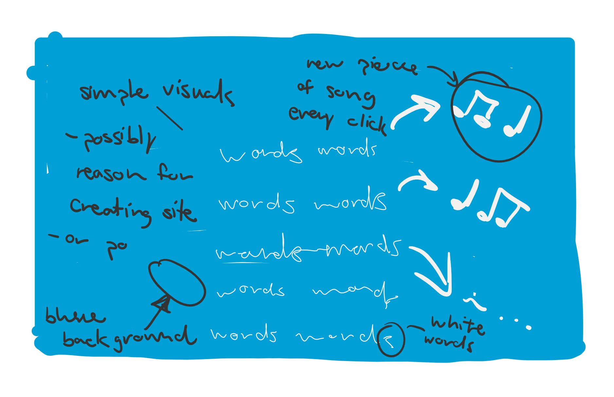

Here is the wireframe for my website.

Before I even do any coding, I need more experience with Tone.js.
As mentioned in my proposal, I've already seen a little of what Tone.js can do, but I've barely scratched the surface.
That's where these tutorials came in handy:
These tutorials by The Code Creative on Youtube were extremely easy to follow, and make Tone.js seem much more approachable.
Following along with them, I was able to create this code:
You can see the results of this code here.
(Personal Notes for the future:)
Since I made a fairly simple sound last time, today I'm going to expand and hopefully experiment with different synths, chords, and phrases.
If all goes well timewise, I hope to start transposing Married Life into code. (I'm not holding out hope, so you shouldn't either, but we'll have to see.)
...
So here's what I did in video form, in case you don't want to bother to visit my example website.
I'm not going to show you the code cause it's a bit of a mess, but I will explain what I did to get to this point.
Using this tutorial and a bit of trial and error, I used a polySynth to create a chord.
This tutorial was nice, and I connected with the author's enthusiasm for the integration of music into coding, but since I don't know much JavaScript, I was in over my head here.
However, the one new piece of info I firmly grasped was that in order to play multiple notes at once, you have to use an array, so that's what I did.
Next I made a sequencer. Do not ask me what that is I barely know.
I watched a bunch of tutorials but they were all sort of useless, but you can see the sort of useless one I stole the actual sequence from here.
There are a few immediate problems I'm noticing, #1 is that I sort of stil don't understand sequencers, but the bigger fish I have to fry, #2 is that I don't know how to pause the sequence, but that's a problem for another day cause I am so done lol.
(Personal Notes for the future:)
Before I get into anything new, the typeface I chose for the paragraphs was really hard for me to read, so I chose a new one. (I can't decide if I like it, might change it again, but at least it's legible).
Today, instead of solving the problems I encountered last time, I'm ignoring them (story of my life).
I think it makes more sense right now to focus on what I actually can do, so I'm going to input the sheet music for Married Life into a website, using multiple sequencers. Wish me luck.
...
I ran into some difficulty.
...
I know I said that I would focus on putting the music into Tone.js, but I really wanted to fix the sequencer so that it would not continuously play.
I tried using this tutorial to create a play/pause button, but I just could not get it to work.
You can find the gist for my non-functional code down below or view it here.
In the comments of the code I outline what I tried to do to fix it, though ultimately I wasn't successful.
At this point I'm tired and confused. I want to try adding in the song, but I don't want it to live in a broken home, so I'll come back tomorrow.
Today was my first time getting user feedback in class.
There wasn't a whole lot for others to test, but I did get some suggestions on how to make this work.
After deliberating on the feedback I got from my classmates, in true me fashion, I ignored them all.
Instead, I looked back at this website Peter made for his McLuhan response.
When you click on the red text, it changes. This is exactly what I wanted for my website, but with audio instead of words.
After playing with the code Peter used, I understood that I wanted to "change the div" on every click.
At this point, I realized that Tone.js was probably a no-go.
I know that it was one of my goals to learn it, but I think that was only because I thought I had to use it for this to work. Now, I'm realizing that MP3s would probably work just as well, if not better, for what I'm doing.
Therefore, I'm officially shedding Tone.js in favor of MP3s.
Anyway, none of the searches I tried would get me close to changing the content of a div with anything but text, so I had to keep digging.
When I found the appendChild() Method, this was even closer. In fact, this is exactly what I want to do visually when my song plays.
The only issue is that the content that appends is always the same - a div that says "Water".
Nonetheless, it brings me much closer to my goal, visually and auditorily, because it helps me understand the structure of JavaScript better.
...
I thought I was a lot closer to finding out how to make my idea work at this point, but I was wrong.
I tried many Google searches like "making dynamic divs" or "how to change the content of a variable every time you click" or blah blah blah.
None of them worked, so I'm giving up for the day. Hopefully things will work out tomorrow.
...It is tomorrow...
sigh
Back to the grind.
...
...
...
Huzzah!
The grind has uncovered thine coveted answers.
I was FaceTiming my sister when I got bored and I had an idea.
I remember Lana telling me during class to look up if/else statements, and at this point, it was my last hope, so I typed into the search bar "how to use if else statements to play a different function every click" and under the fourth link I found this beauty:
Clicking on that link brought me to the exact code I needed in order to change the audio every time you click.
I had to circle around the room victoriously a couple of time after finding this code. (It's seriously so perfect. I can even copy the whole thing directly and experiment with it right there. My angel TT)
You can find the original code here.
Today is my last day with you.
Thank you for joining me on my journey. I'm sad to see you go, but I have a website to give you as a parting gift, so I'm happy too.
Here you can find my gift to you.